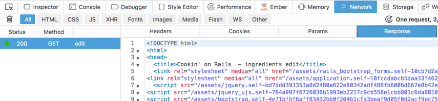
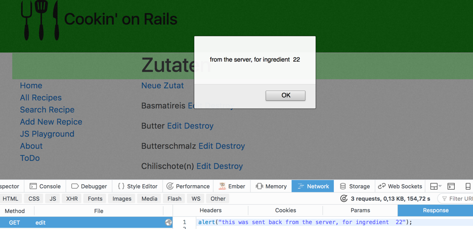
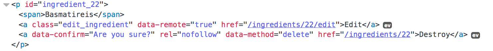

JavaScript and Rails
This guide covers the built-in JavaScript functionality of Rails;
it will enable you to create rich and dynamic web applications with
ease!
After reading this guide, you will know:
- unobtrusive JavaScript,
- how to use ES6 in your Rails app,
- how Rails avoids loading full HTML pages,
- how built-in helpers assist you,
- the Turbolinks gem.
This guide is based on the original
Rails Guide Working with JavaScript.
The original guide uses coffeescript, this guide uses ES6 and
refers to an example app
▻
1 Unobtrusive JavaScript
Rails uses a technique called "Unobtrusive JavaScript" to handle attaching
JavaScript to the DOM. The goal is to separate javascript from html as
much as possible. So instead of writing inline JavaScript:
<a href="#" onclick="this.style.backgroundColor='#990000'">Paint it red</a>
We extract the code into a JavaScript funktion, and only attach the event
handler to the a-tag after the page has loaded. To encourage reuse of JavaScript
funktions we try to add all the data needed in html data-attributes:
Not very DRY, eh? We can fix this by using events instead. We'll add a data-*
attribute to our link, and then bind a handler to the click event of every link
that has that attribute:
$(function(){
$("a[data-background-color]").click(function(e) {
e.preventDefault();
var backgroundColor = $(this).data("background-color") || this.style.backgroundColor;
var textColor = $(this).data("text-color") || this.style.color;
this.style.backgroundColor = backgroundColor;
this.style.color = textColor;
});
});
<a href="#" data-background-color="#990000">Paint it red</a>
<a href="#" data-background-color="#009900" data-text-color="#FFFFFF">Paint it green</a>
<a href="#" data-background-color="#000099" data-text-color="#FFFFFF">Paint it blue</a>
This is called 'unobtrusive' JavaScript because we're no longer mixing
JavaScript into the HTML. We've properly separated our concerns, making future
change easy.
Take a look at the standard "destroy" links created by the scaffold:
they use data-confirm to unobstrusively add a confirmation dialog.
The Rails team strongly encourages you to write your JavaScript in this style,
and you can expect that many libraries will also
follow this pattern.
▻
2 Using ES6 in Rails
Rails comes with CoffeeScript by default. It is transpiled to JavaScript
by the asset pipeline. CoffeeScript gives you a simpler, more ruby-like syntax,
including arrow functions and a secure for in loop. This was very valuable
three or five years ago. But in 2017 ES6 also gives you arrow functions
and a for of loop, so you might not need CoffeeScript after all.
To disable CoffeeScript just comment out the gem in the Gemfile
and remove any *.coffee files the scaffold might have created from /app/assets/javascript
To use ES6 instead follow the instructions for
the sprockets-es6 gem.
With this gem
any file in /app/assets/javascript/ with extension .js.es6 will be
transpiled to JavaScript first, and later be minified and combined by the asset pipeline.
You do not need to write modules or import them, because all the JavaScript
code will be combined into one file.
▻
3.1 What changes?
In order to understand how Javascript is used here, you must first understand what a web browser does normally.
When you type http://localhost:3000 into your browser's address bar and hit
'Go,' the browser (your 'client') makes a request to the server. It parses the
response, then fetches all associated assets, like JavaScript files,
stylesheets and images. It then assembles the page.
If you click a link, the same process starts again: fetch the page, fetch the assets, put it all together,
show you the results. This is called the 'request response cycle.'
JavaScript can also make requests to the server, and parse the response. It
also has the ability to update information on the page. Combining these two
powers, you can write JavaScript that updates just parts of a webpage,
without needing to get the full page from the server. This is a
powerful technique. It used to be called Ajax, but nowadays it's just the normal way Javascript is used.
Rails provides quite a bit of built-in support for building web pages with this
technique.
▻
3.2 Javascript Example
You can clone the source code for the example from
github
Let's have a look at the list of ingredients, and how an ingredient
can be edited with the normal CRUD operations created by the scaffold.
There are four HTTP requests and three full page loads in this process:

We want to replace this with a version that uses Rails typical Javascript. When
the 'edit' link is clicked the server returns JavaScript that places
the form into the existing page.
When the form is submitted - also by Javascript - the server returns
JavaScript that enters the name of the new ingredient into
the existing list.
This still needs four HTTP requests, but a lot less data is transferred
and - more importantly - there is no new full HTML page for the browser
to parse and display. The URLs stay almost the same:

As a first step we change the link_to to remote:
link_to 'Edit', edit_ingredient_path(ingredient), remote: true, class: 'edit_ingredient'
Now clicking the link fails silently. In your
browsers network view you can
see that a GET request is sent, and HTML code
is returned (just like before):

But our HTTP request does not handle the HTML.
In fact, our HTTP requests expects the response to
contain JavaScript code! If you look in the Rails log
you can see that:

Rails is already prepared to respond to both requests
that expect HTML and those that expect JavaScript.
In fact we only have to create a view edit.js.erb
and Rails will render that.
Try it out with a simple alert:
alert("from the server, for ingredient <%= @ingredient.id %>");
The result should be an alert in your browser:

If this works we can start building the
behaviour we actually want: We want to replace
the existing display of the ingredient with the
edit form. Let's find a good place in the
DOM to do that:

The paragraph has an id that identifies the ingredient.
That is a good place to start. Then we find the first
span inside that and replace the existing content:
console.log("now running for <%= @ingredient.id %>");
$("#ingredient_<%= @ingredient.id %> span").html('put the form here!');
For the creation of the form we can use the existing form partial.
We need to escape the resulting code
in the proper way for using it in javascript:
....html('<%= escape_javascript(render 'form') %>');
There is a short version for escape_javascript: just the letter j.
And we can leave the braces off:
....html('<%= j render 'form' %>');
At this stage the app is fully functional again: If you send
in the form via normal PATCH request a new page is rendered,
and everything works.
But we will not stop here. We will turn this form into a "remote form".
We can do this by adding the data- attribute to it.
The form has a unique id we can use to identify it:
$("#edit_ingredient_<%= @ingredient.id %>").data('remote', true);
The form sends a PATCH request (via Javascript), which will be handled
by the update action. This action already specifies
two formats it can handle: html and json:
# PATCH/PUT /ingredients/1
# PATCH/PUT /ingredients/1.json
def update
respond_to do |format|
if @ingredient.update(ingredient_params)
format.html { redirect_to ingredients_path, notice: 'Ingredient was successfully updated.' }
format.json { render :show, status: :ok, location: @ingredient }
else
format.html { render :edit }
format.json { render json: @ingredient.errors, status: :unprocessable_entity }
end
end
end
This limits the allowed format, we have to add .js explicitly:
# PATCH/PUT /ingredients/1
# PATCH/PUT /ingredients/1.json
# PATCH/PUT /ingredients/1.js
def update
respond_to do |format|
if @ingredient.update(ingredient_params)
format.html {
redirect_to ingredients_path, notice: 'Successfully updated.'
}
format.json { render :show, status: :ok, location: @ingredient }
format.js { }
else
format.html { render :edit }
format.json {
render json: @ingredient.errors, status: :unprocessable_entity
}
format.js { }
end
end
end
This will render the view update.js.erb.
Now we have to make this view handle both cases:
saving @ingredient caused errors or went through
successfully.
There is a length validation on the ingredient name,
so typing in just one letter should cause an error. Try it out with this code:
<% if @ingredient.errors.any? %>
alert("error: <%= @ingredient.errors.full_messages.first %>");
<% else %>
alert("saved successfully");
<% end %>
In case of success we want to remove the form and replace it with
the new name of the ingredient. This is left as an exercise for the reader.
▻
3.3 The Rails Javascript Style
Sending JavaScript from the Server to the client is a very
strange concept at first. But as you have seen you can achive
a lot with a few lines of jQuery and some clever reuse of existing
templates.
You may have noticed that the HTML code for the example
app included some additional tags and ids that turned
out to be very helpful in the example.
This style of using Javascript is very specific to Rails. Other
frameworks use other approaches.
▻
3.4 Helper Methods
The "Unobtrusive JavaScript" Helpers, actually consist of two
parts: the JavaScript half and the Ruby half.
rails.js
provides the JavaScript half, and the regular Ruby view helpers add
tags and data-attributes to the DOM. The JavaScript in rails.js then listens for these
attributes, and attaches appropriate handlers.
form_for
and form_tag
are helpers that assists with writing forms. Both take a :remote option. It works like this:
<%= form_for(@article, remote: true) do |f| %>
...
<% end %>
This will generate the following HTML:
<form
accept-charset="UTF-8"
action="/articles"
class="new_article"
data-remote="true"
id="new_article"
method="post">
...
</form>
rails.js will remove the data-remote="true" attribute and
add a handler that turns the form into an form submitted by Javascript.
3.4.2 error handling
You can handle errors (for example: no answer from the server)
on the client side by listening to the "ajax:error" event:
$("#new_article").on("ajax:error", function(e, xhr, status, error) {
$("#new_article").append("<p>ERROR " + error + "</p>");
});
These events work for all the helpers discussed here.
You can learn more about the available
events in the jquery-ujs wiki.
3.4.3 link_to
link_to
and its cousin link_to_unless_current
are helper that generate links. Again they have a :remote option:
<%= link_to "an article", @article, remote: true %>
which generates
<a href="/articles/1" data-remote="true">an article</a>
Again rails.js removes the data-attribute and attaches a
hander that deactivates the normal link and uses Javascript
to send the HTTP request instead.
button_to
is a shorthand for creating a form that consists of just one button. This
help in using consistent REST requests.
<%= button_to "Delete Image",
{ action: "delete", id: @image.id },
method: :delete,
data: { confirm: "Are you sure?" } %>
this generates
<form method="post" action="/images/delete/1" class="button_to">
<input type="hidden" name="_method" value="delete" />
<input data-confirm='Are you sure?' value="Delete Image" type="submit" />
<input name="authenticity_token" type="hidden" value="10f2...05a6"/>
</form>"
▻
4 Turbolinks
Rails ships with the Turbolinks gem.
Turbolinks are a method of speeding up user interaction with the webpage
without making changes in the backend.
▻
4.1 How Turbolinks Works
Turbolinks attaches a click handler to all <a> Tags on the page. When
the link is clicked, Turbolinks will make a HTTP request for the page,
parse the response, and replace the entire <body> of the page with the
<body> of the response. It will then use the HTML History API
to change the URL to the correct one. In unsupported browsers
, Turbolinks gracefully degrades to standard navigation.
Turbolinks are enabeld by default in new rails applications.
If you want to disable Turbolinks for certain links, add a data-no-turbolink
attribute to the tag:
<a href="..." data-no-turbolink>No turbolinks here</a>.
If you want to keep an element when the page changes, add the data-turbolinks-permanent attribute,
for example in the layout:
<%= yield %>
<div class="media-player" data-turbolinks-permanent id="music-player">
[audio player should not be reloaded, audio can contiue to play]
</div>
▻
4.2 Page Change Events
When writing JavaScript, you'll often want to do some sort of processing upon
page load. With jQuery, you'd write something like this:
$(function(){
alert("page has loaded!");
});
However, because Turbolinks overrides the normal page loading process, the
event that this relies on will not be fired. If you have code that looks like
this, you must change it to:
$(document).on("turbolinks:load", function(){
alert("page has loaded!");
});
For more details, including other events you can bind to, check out the
Turbolinks
README.
▻
5 Other Resources
Here are some helpful links to help you learn even more: